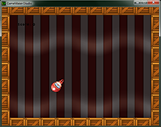

Tutorial
Page 1 of 15
Your First Game
So, you have gotten yourself a copy of GameMaker: Studio and want to make games? Well, this tutorial is the best place for you to start! Here we are going to introduce you to most of the main
concepts behind the programme and hopefully show you how simple it is to get a game up and running, not just on your PC, but on your mobile device or web page too.

This tutorial aims to teach you how to find your way around the GameMaker IDE, as well as how the basic components of a game are created, linked to resources, and then placed into rooms to form
a final game that can then be distributed for others to play. The game itself that we are going to make is a very simple one called "Catch The Clown", and we are going to make it using the proprietary
GameMaker Drag'n'Drop system (which will be shortened to D'n'D from now on), although further tutorials available to you will focus more on the code aspect of making a game.
At various points in this tutorial you will be directed towards the "Catch The Clown Assets" folder. It can be found in this folder, and you
should have it open and ready as we will need a few things from it for our game.
NOTE: If you can't see some of the images in this tutorial correctly, or they seem too small, you can expand the tutorial pane by dragging the left window border into the IDE.
© Copyright YoYo Games Ltd. 2015 All Rights Reserved